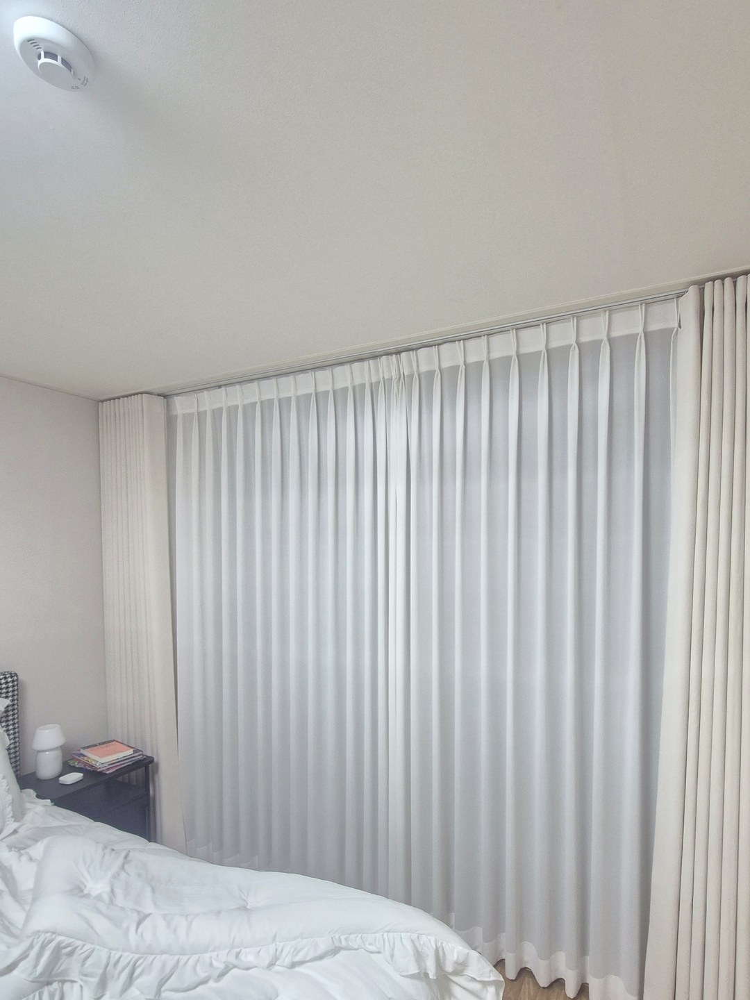
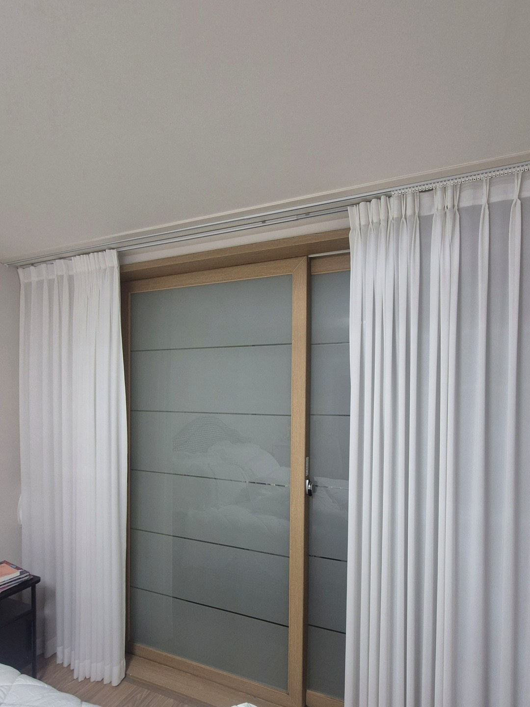
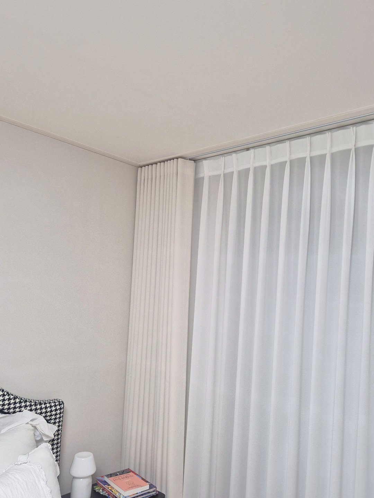
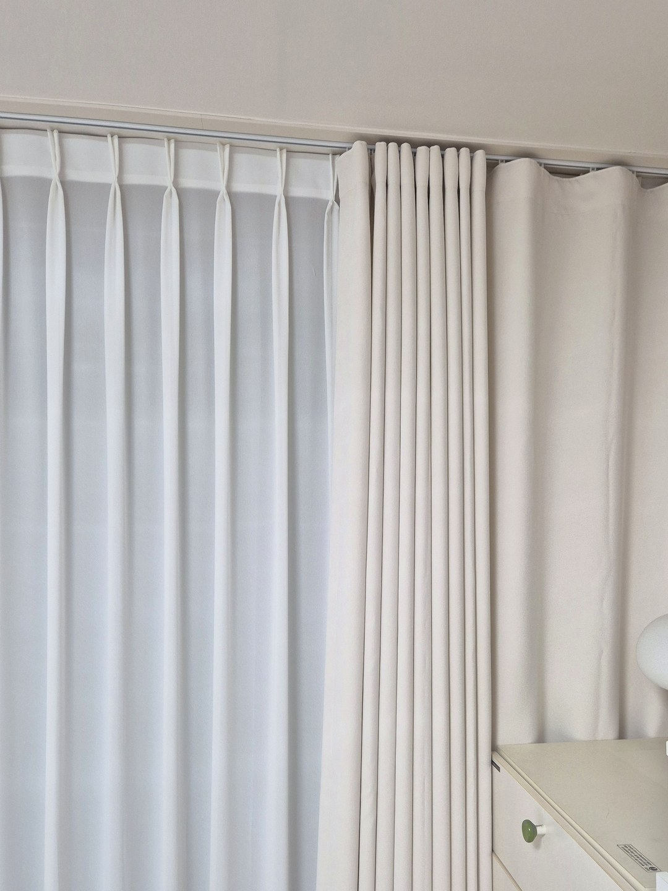
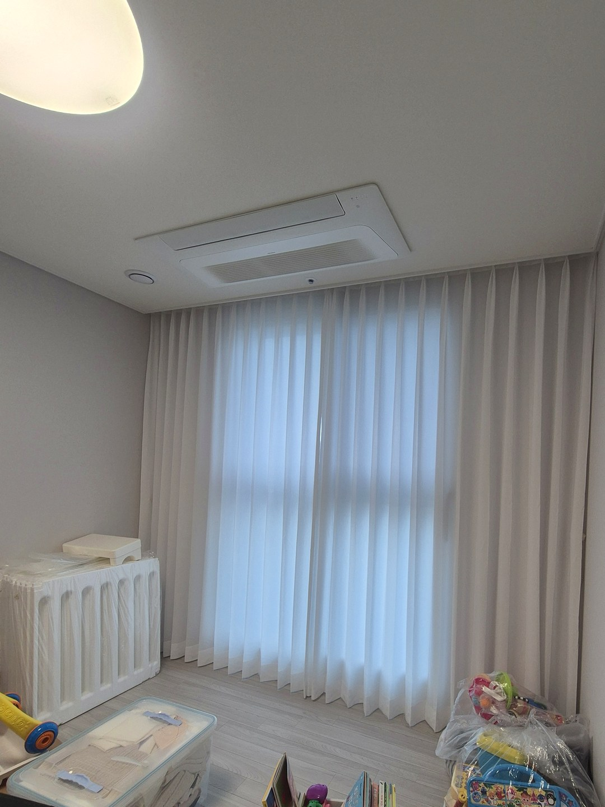

2026년 11월 3일 시공
포항 연일 유강 리버힐
안방 쉬폰 앞 아주 연한 베이지 커튼
시공후기

이번 현장은 포항 연일 유강 리버힐 안방입니다.
안방에 쉬폰 커튼 한 겹만 쓰고 계셨는데,
다가오는 겨울을 앞두고 따솜을 찾아 주셨습니다.
쉬폰 한 겹으로는 아쉬운 계절

쉬폰은 빛을 부드럽게 들여 방을 화사하게 해 주지만, 원단이 얇습니다.
고객님은 지금의 밝은 분위기는 그대로 두면서,
겨울에 한 겹 더 닫아 둘 수 있는 커튼을 원하셨습니다.
분위기와 쓰임을 함께 챙겨야 하는 주문이었습니다.
일반 베이지보다 한 톤 연하게
원단과 색은 방 분위기를 해치지 않는 쪽을 먼저 봤습니다.
흔히 쓰는 베이지보다 한 톤 더 연한, 아주 옅은 베이지로 골랐습니다.
흰 쉬폰 옆에 걸어도 색이 튀지 않고 은은하게 이어져서 방이 어두워 보이지 않습니다.

낮에는 베이지 커튼을 양옆으로 모아 두고 쉬폰만 닫아 쓰시면 예전처럼 밝은 방입니다.
밤이나 바람이 찬 날에는 베이지 커튼까지 닫아,
얇은 쉬폰 한 겹일 때보다 창가 찬 기운을 덜 느끼시도록 했습니다.

커튼을 모아 두면 벽 쪽으로 가지런히 정리되고,
흰 쉬폰과 한 가지 톤으로 이어집니다.
한 겹 더하실 때 알아 두실 것
솔직히 말씀드리면, 커튼 한 겹을 더한다고 창 자체의 단열이 바뀌지는 않습니다.
창틀 틈으로 바람이 드는 집이라면 커튼만으로는 한계가 있어 상담 때 같이 살펴봅니다.
또 쉬폰 앞에 커튼을 더하려면 커튼박스 안에 레일 두 줄이 들어갈 깊이가 있어야 합니다.
창 전체와 커튼박스 안쪽이 보이게 찍은 사진을 보내 주시면
지금 커튼에 한 겹을 더할 수 있는지부터 보고 대략적인 견적을 알려 드립니다.
비슷한 시공





포항자이디오션(2026년 10월 입주) 커튼 준비 일정 보기 →